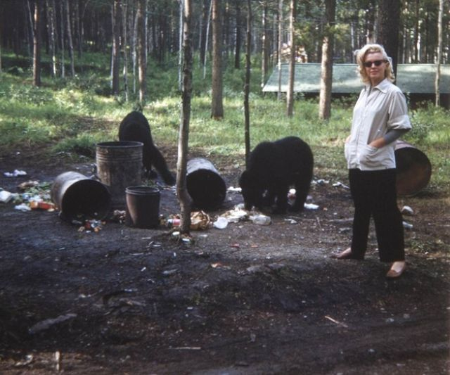

<!DOCTYPE html PUBLIC "-//W3C//DTD XHTML 1.1//EN" "http://www.w3.org/TR/xhtml11/DTD/xhtml11.dtd">
<html xmlns="http://www.w3.org/1999/xhtml" xml:lang="en">
<head id="head">
<script>
/*****************************
 
 Facebook metadata to fill out:
      Page Title
      Description
      Filename (to complete the path to the url)

******************************/
var title = "Unsexual Pictures of Marilyn Monroe Reveal Some of her Personality";
var desc = "Times when she was let down her guard.";
var filename = "marilyn.html";
var fb_img_path = "marilyn/android-icon-192x192.png";
</script>
</head>

<body>
<div id="body">
<!--
Scratchpad for editing HTML. You need to copy&paste it into content variable below. 
-->

</div>	
<script>
/*****************************
 
 Article content to add:
      Date
      Content (formatted in HTML)

******************************/
var date = "Aug 15, 2016";
var content = "<p>I'm interested in unposed pictures of Marilyn Monroe when she just got to be herself. Here are some of the times she showed her true self.</p>";

content += "<h2>One with the elements</h2>";

content += '<figure><figcaption>A glimpse of her freckles.</figcaption></figure>';

content += '<figure></figure>';

content += '<figure></figure>';


content += "<h2>She liked to stick her tongue up.</h2><p>Don\'t believe me?</p>";

content += '<figure></figure>';

content += '<figure></figure>';

content += '<figure></figure>';

content += '<figure></figure>';

content += '<figure></figure>';

content += '<figure><figcaption>With Joe Dimaggio</figcaption></figure>';

content += "<h2>She didn't hold back while eating.</h2>";

content += '<figure><figcaption>Even while sexy in bed, she chomps away.</figcaption></figure>';

content += '<figure></figure>';

content += '<figure></figure>';


content += "<h2>She had a wide stance.</h2>";


content += "<p>Maybe it was a reaction to being wrapped in tight dresses so often. </p>";


content += '<figure><figcaption>Happy amongst the bears.</figcaption></figure>';

content += '<figure><figcaption>Even in a tight dress she plants herself.</figcaption></figure>';

content += '<figure></figure>';

content += '<figure><figcaption>Even while sitting you can see it.</figcaption></figure>';

content += '<figure></figure>';


content += "<h2>She could be goofy.</h2>";

content += '<figure><figcaption>Genuinely having fun.</figcaption></figure>';

content += '<figure><figcaption>Playing on set.</figcaption></figure>';


content += '<figure><figcaption>Whateverrr!</figcaption></figure>';


content += "<h2>So there you have it!</h2>";


/*****************************
 
 Boilerplate code. Does not need to be filled out.

******************************/
</script>
  <!-- JQuery & Bootstrap-->
  <script src="js/jquery.min.js"></script>
  <script src="js/bootstrap.min.js"></script>
  <script src="js/page.js"></script>

    <!-- custom scripts -->
  <script src="js/nav.js"></script>
  <script src="js/foot.js"></script>
  <script src="js/facebook.js"></script>
  <script src="js/twitter.js"></script>
  <script src="js/data.js"></script>
  <script src="js/menu.js"></script>

<script type="text/javascript">

$(document).ready(function(){
  document.getElementById("head").innerHTML = head;
  document.getElementById("body").innerHTML = body;

  // Need to build nav after #nav element exists
  buildNav();
  // Need to build menu after #right_menu element exists
  buildMenu();
  // Need to build footer after #foot element exists
  buildFooter();
 
});
</script>
</body>
</html>

